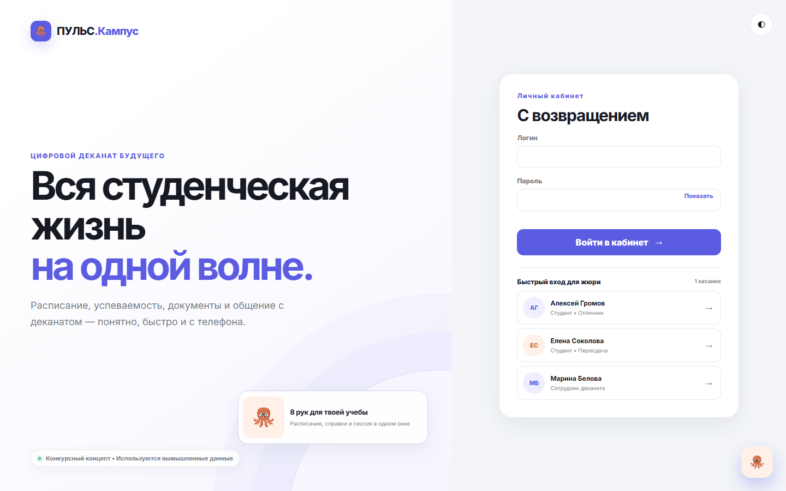
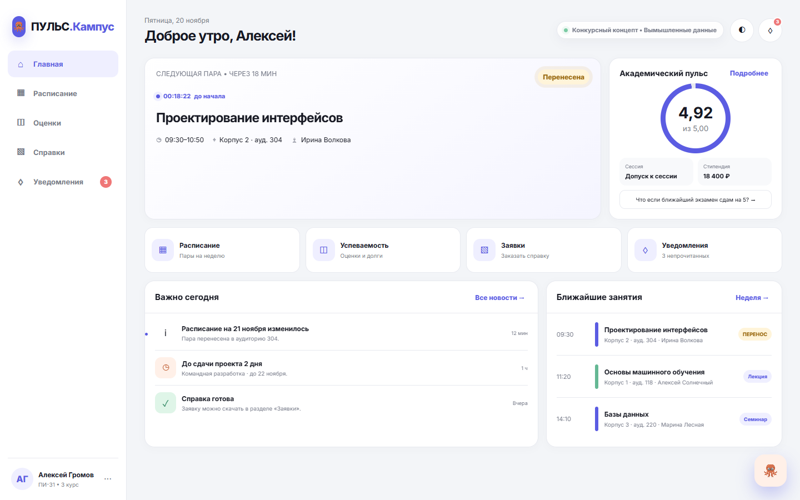
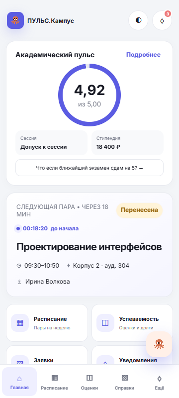

Расписание, оценки, справки и объявления разрознены по разным сервисам и чатам. ПУЛЬС.Кампус собирает учебные задачи в единое понятное окно и сокращает поиск нужного действия до пары касаний.
Выбран Neo-Minimalism Bento UI: главная информация разделена на самостоятельные карточки, сохраняя быстрый обзор. Быстрые переходы на расписание, успеваемость, заявки и уведомления работают и с большого экрана, и с телефона шириной от 360 px.

Экран входа Быстрый демо-вход для жюри и оригинальный пиксельный маскот.
Технологии и ИИ-инструменты
GitHub Copilot Agent в PyCharm — проектирование и реализация интерфейса и backend-сценариев.
LLM-архитектор — постановка ТЗ, структура API, промпты и анализ ошибок ИИ.
Python + SQLite — легкий сервер без внешних runtime-зависимостей.
HTML/CSS/JavaScript — адаптивный интерфейс, темы и клиентская логика.

Студенческий дашборд Ключевые функции собраны на одном экране в Bento-сетке.
Ключевые промпты и эволюция
1. Рабочий прототип вместо макета
«Создай работающий личный кабинет студента: вход, расписание, успеваемость, заявки и уведомления. Данные храни в SQLite, а пароли не сохраняй открытым текстом».
2. Коммерческий Bento-редизайн
«Переделай интерфейс до уровня коммерческого продукта с светлой и темной темами, мобильным Tab Bar и виджетами следующей пары и академического пульса».
3. Роли и маскот
«Добавь отличника, студента с пересдачей и сотрудника деканата. Используй загруженный logo.png в favicon, навигации, Login Hero и AI-виджете».
Правила для последующих изменений закреплены в .github/copilot-instructions.md: вымышленные данные, сохранение корпоративного маскота, проверка роли и владельца заявки.

Мобильная версия Основные сценарии адаптированы для экрана 360 × 800 px.
Архитектура безопасности простыми словами
Пароли: случайная соль + PBKDF2-SHA256, 120 000 итераций; в базе хранится только соль$хеш.
Сессии: случайный токен подписан HMAC-SHA256 с секретом APP_SECRET, который берется из переменной окружения.
Защита заявок: данные отдаются только владельцу, а сотрудник деканата определяется отдельной ролью staff.
Отсутствие секретов: ключи не прописаны в браузере или исходном файле; для хостинга используется переменная окружения.
Тестовые данные: использованы только вымышленные ФИО, направления и оценки.
Ручные этапы и качество
Ручная проверка включала точную замену логотипа на загруженный оригинал, контроль мобильной сетки, исправление структуры SQLite для ролей, проверку статических заголовков сервера и запуск сценариев без реальных сервисов вуза.
Оригинальный логотип-маскот Используется во всех брендовых точках.Готовность к деплою Dockerfile и amvera.yml для облачного хостинга.